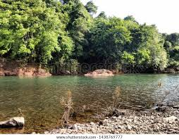
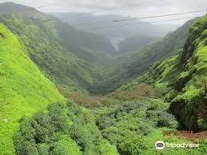
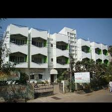
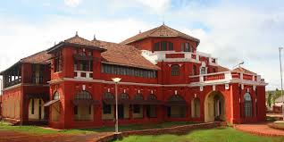

Lanja is a scenic taluka in Ratnagiri district of Maharashtra, known for its rivers, temples, hills, and peaceful rural surroundings typical of the Konkan region.

A calm river landscape offering beautiful natural scenery and greenery.
Traditional Konkan temples reflecting the cultural heritage of the region.

Green hills ideal for scenic drives, trekking, and monsoon photography.

rating: 4.2 | Comfortable stay with essential amenities.

rating: 4.0 | Budget-friendly accommodation in a peaceful area.